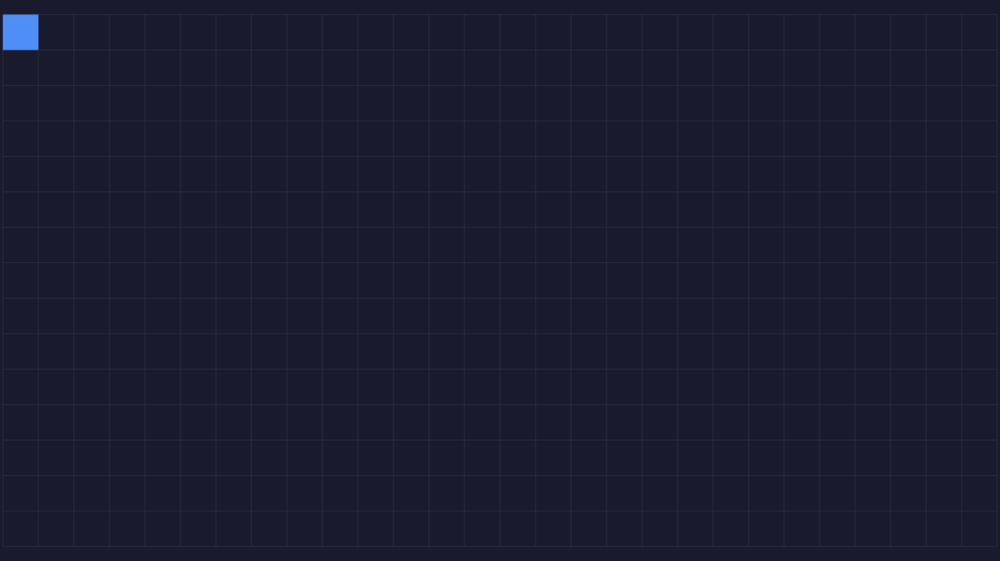

This project was made to be a foundation for other games, it has no objective or way to win. Using js canvas, I
made a square move around with the arrow keys. I also drew a grid that is the same size as the square, this gives
the illusion that the square snaps in place. The most complicated part was centering and drawing the grid. The
grid takes up the whole screen with a bit of padding and centering.
The CSS is very simple, blue square on a dark blue background. Later, you can change the rectangle to actually be
an image and put some pictures or drawings on other squares in the grid.
📥 Download Square Movement

Square Movement Preview